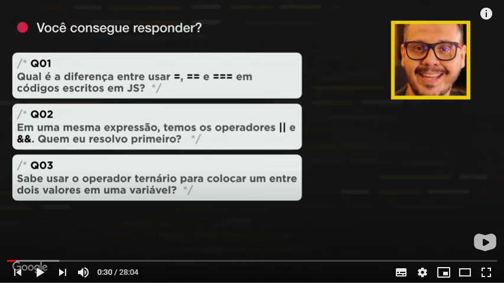
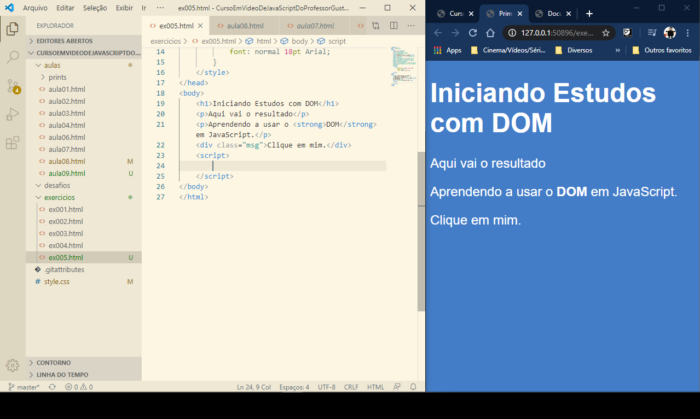
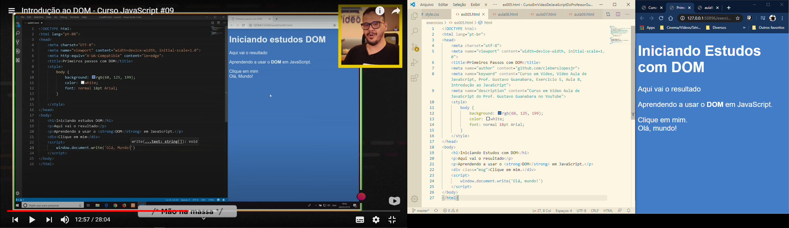
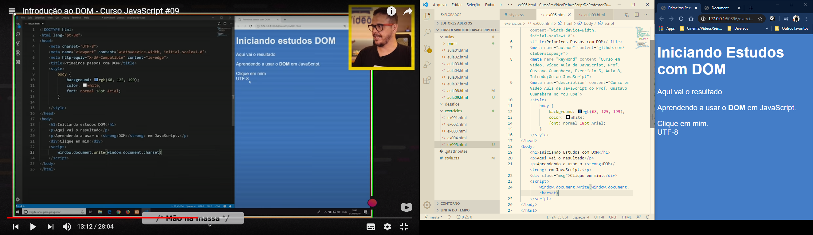
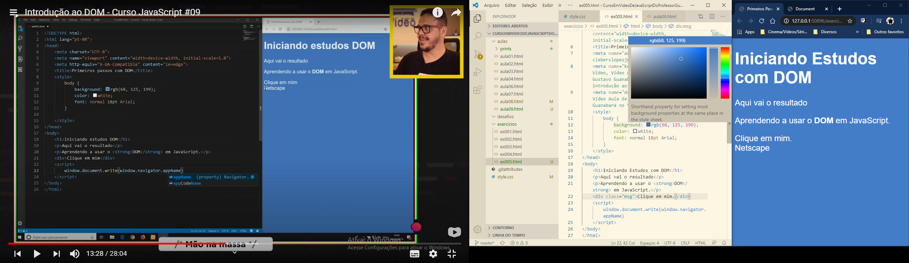

Revisão da Aula Anterior.
- Q01 - Qual é a diferença entre usar: =, == e === em códigos escritos em JS?
- Respostas:
- = (operador de atribuição) - é usado para atribuir valores a uma variável;
- == (igual a) - é usado para comparação entre duas variáveis, independentemente do tipo de dados da variável;
- === (valor e tipo igual) - é usado para a comparação entre duas variáveis, mas isso irá verificar o tipo estrito, o que significa que ele irá verificar o tipo de dados e comparar dois valores.
- Q02 - Em uma mesma expressão, temos os operadores || e &&. Quem eu resolvo primeiro?
- Q03 - Sabe usar o operador ternário para colocar em entre dois valores em uma variável?
n1 = 10
idade = 50
peso = 84
altura = 1.55
Para x=10 temos que:
x == 8 : retorna false
x==10 : retorna true
x=="10" : retorna true
Nesse caso é resolvida primeira a conjunção (&&) e depois a dijunção (||).
var idade = 19
> undefined
var r = idade >= 18 ? 'MAIOR' : 'MENOR'
> r
'MAIOR'
Aula 9 - Introdução ao DOM.
DOM é a abreviação de: document object model.
Arvore DOM
Métodos de Seleção.
Por Marca - getElementsByTagName();
Por ID - getElementById();
Por Nome - getElementsByName;
Por classe - getElementsByCassName;
Por Seletor - querySelector() e querySelectorAll().
Exercício 5
Parte 1
Primeiro Exemplo: "Olá, mundo!"
Outro Exemplo mostrando o <charset=utf-8>
Mostrando o Navegador
Obs: estranhamente, no caso, o navegador exibido está errado, pois foi mostrado o Netscape, quando eu estava usando o Google Chrome.